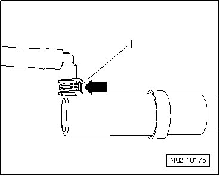

Headlamp Washer System
Headlamp Washer System
- Disconnect by depressing clip - 1 - - arrow - and then separating coupling from jet.

- Reconnect by keeping clip - arrow - depressed while pushing coupling onto jet until it engages. Check securing clip for secure locking by attempting to pull it off without depressing clip.